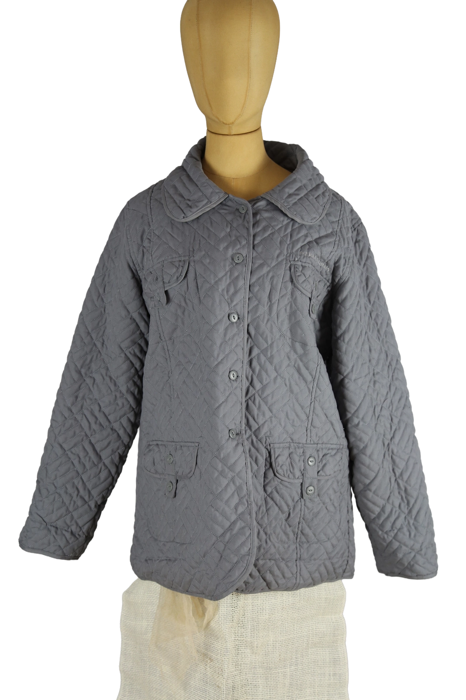

1 / 6Aus dem kuratierten Archiv von Disorder119. Gesteppte Jacke von Pierre Balmain in zurückhaltendem Grau mit klassischer, funktionaler Silhouette. Das gleichmäßige Rautensteppmuster prägt die gesamte Oberfläche und verleiht dem Piece eine ruhige, strukturierte Wirkung. Der gerade Schnitt sorgt für eine ausgewogene Proportion, während der weich fallende Kragen und die durchgehende Knopfleiste den zeitlosen Charakter unterstreichen. Dezente Brust- und Fronttaschen fügen sich unaufdringlich in das Gesamtbild ein. Die Ton-in-Ton gehaltene Stickerei auf der Brust verweist subtil auf die Marke. Eine Jacke mit klarer Linienführung, die zwischen Utility und eleganter Zurückhaltung vermittelt. Details: Marke: Pierre Balmain Farbe: Grau Größe: M Passform: Regulär Verschluss: Knopfleiste Material: Gestepptes Textilmaterial Herstellungsland: Nicht angegeben Fotografie & Passform: Das Kleidungsstück wurde auf unserer Standard-Schneiderpuppe fotografiert, die wir zur konsistenten Darstellung aller Kleidungsstücke verwenden. Maße der Schneiderpuppe: Brustumfang 89 cm Taillenumfang 66 cm Hüftumfang 89 cm Schulterbreite 38 cm Zustand: Guter getragener Zustand mit leichten, altersbedingten Gebrauchsspuren. Rechtliche Hinweise: Verkauf als gebrauchtes Kleidungsstück. Die Beschreibung erfolgt nach bestem Wissen und Gewissen. Farbnuancen und Oberflächenwirkungen können aufgrund von Lichtverhältnissen bei der Fotografie sowie unterschiedlicher Bildschirmdarstellungen leicht vom Original abweichen. Disorder119 steht für sorgfältig kuratierte Designerstücke mit Fokus auf Authentizität, Qualität und zeitlose Relevanz.
Disorder119 · Kuratiertes Archiv für Designer-, Vintage- und Contemporary-Mode. Jedes Stück wird einzeln ausgewählt, fotografiert und beschrieben.